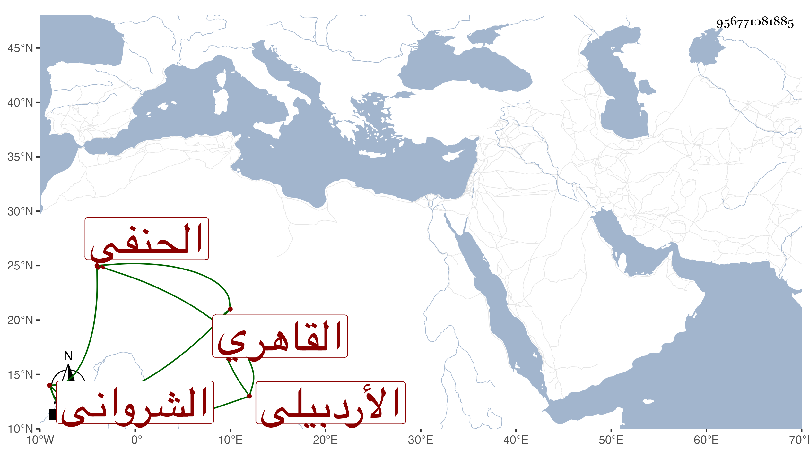

0902Sakhawi.DawLamic.ITO20230111-ara1.EIS1600.956771081885
Biography ID: 956771081885
أحمد بن عبيد الله بن عوض بن محمد الشهاب بن الجلال بن التاج الأردبيلي الشرواني القاهري الحنفي أخو البدر محمود الآتي ويعرف بابن عبيد الله . ولد في صفر سنة إحدى وتسعين وسبعمائة واشتغل قليلا وتعلم بالتركي وكان جميل الصورة فقربه كثير من الأمراء وتنقلت به الأحوال إلى أن ناب في الحكم بالجاه عن التفهني فمن بعده مع قلة البضاعة في الفقه والمصطلح ولذلك حفظت عنه عدة أحكام فاسدة . وكان مع ذلك يلازم الجلوس بمسجد بظهر الخانقاه الشيخونية إلى أن مات بالإسهال الدموي والقولنج والصرع في ليلة الأربعاء ثالث عشري رمضان سنة أربع وأربعين . ذكره شيخنا في إنبائه ، وله ذكر أيضا في حوادث سنة خمس وعشرين والتي قبلها منه ، وأخبرني أخوه أنه حفظ النافع وأنه درس بالايتمشية برغبته له عنها فلما مات عادت الوظيفة له عفا الله عنه .
